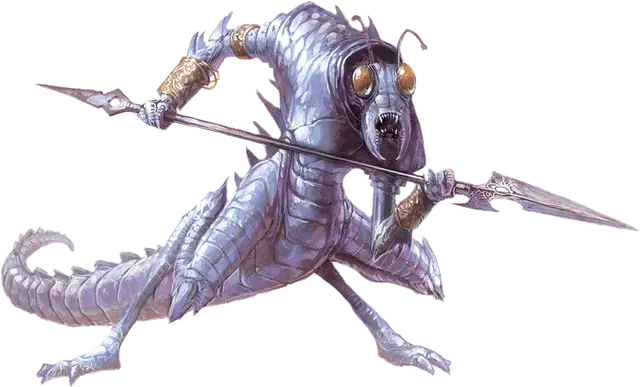

Ледяной дьявол (Гелюгон)
Ice Devil
Большое Исчадие (Дьявол), законно-злое

Класс Доспеха 18 (природный доспех)
Хиты 180 (19к10 + 76)
Скорость 40 футов
| мод | спас | ||
|---|---|---|---|
| СИЛ | 21 | +5 | +5 |
| ЛОВ | 14 | +2 | +7 |
| ТЕЛ | 18 | +4 | +9 |
| мод | спас | ||
|---|---|---|---|
| ИНТ | 18 | +4 | +4 |
| МДР | 14 | +2 | +7 |
| ХАР | 18 | +4 | +9 |
Сопротивление урону дробящий, колющий, рубящий от немагических атак, кроме нанесённых посеребрённым оружием
Иммунитет к урону огонь, холод, яд
Иммунитет к состояниям отравление
Чувства слепое зрение 60 футов, тёмное зрение 120 футов, пассивное Восприятие 12
Языки Инфернальный, Телепатия 120 фт.
Опасность 14 (11500 опыта)
Бонус мастерства +5
Особенности
Дьявольское зрение. Магическая тьма не мешает тёмному зрению дьявола.
Сопротивление магии. Дьявол совершает с преимуществом спасброски от заклинаний и прочих магических эффектов.
Копья ледяных дьяволов. Некоторые ледяные дьяволы обладают следующими вариантами действий:
Мультиатака. Дьявол совершает две атаки: одну ледяным копьем, и одну хвостом.
Ледяное копье. Рукопашная атака оружием: +10 к попаданию, досягаемость 10 футов, одна цель. Попадание: Колющий урон 14 (2к8 + 5) плюс урон холодом 10 (3к6). Если цель — существо, она должна преуспеть в спасброске Телосложения Сл 15, иначе её скорость на 1 минуту снижается на 10 футов; в каждом своем ходу она сможет совершать либо действие, либо бонусное действие, но не то и другое; и оно не может совершать реакции. Цель может повторять спасбросок в конце каждого своего хода, при успехе завершая этот эффект на себе.
Вариант: Призыв дьявола. У некоторых дьяволов может быть действие, позволяющее им призывать других дьяволов.
Призыв дьявола (1/день). Дьявол выбирает, кого призвать, и пытается это сделать. Ледяной дьявол получает 60% шанс призыва одного ледяного дьявола (Гелюгон) [ice devil].
Призванный дьявол появляется в свободном пространстве в пределах 60 футов от призывателя, и действует как его союзник, не имеющий способности призывать дьяволов. Он призывается на 1 минуту или пока призыватель не умрёт или действием его не отпустит.
Действия
Мультиатака. Дьявол совершает три атаки: одну укусом, одну когтями, и одну хвостом.
Укус. Рукопашная атака оружием: +10 к попаданию, досягаемость 5 футов, одна цель. Попадание: Колющий урон 12 (2к6 + 5) плюс урон холодом 10 (3к6).
Когти. Рукопашная атака оружием: +10 к попаданию, досягаемость 5 футов, одна цель. Попадание: Рубящий урон 10 (2к4 + 5) плюс урон холодом 10 (3к6).
Хвост. Рукопашная атака оружием: +10 к попаданию, досягаемость 10 футов, одна цель. Попадание: Дробящий урон 12 (2к6 + 5) плюс урон холодом 10 (3к6).
Стена льда (перезарядка 6). Дьявол магическим образом формирует непрозрачную стену льда на твердой поверхности, которую видит в пределах 60 футов от себя. Толщина стены — 1 фут, длина до 30 футов и высота 10 футов, или же это купол полусферы с диаметром до 20 футов.
Когда стена появляется, все существа в её пространстве выталкиваются из неё по ближайшему маршруту. Существо само выбирает, с какой стороны стены окажется, если только оно не недееспособно. После этого существо совершает спасбросок Ловкости Сл 17, получая урон холодом 35 (10к6) при провале или половину этого урона при успехе.
Стена существует 1 минуту, либо пока дьявол не станет недееспособным или не умрет. Стене можно причинять урон и прорубать в ней проходы; у каждой 10-футовой секции КД 5, 30 хитов, уязвимость к урону огнём и иммунитет к урону кислотой, некротической энергией, психической энергией, холодом и ядом. Если секция уничтожена, она оставляет после себя область холодного воздуха. Каждый раз, когда существо оканчивает перемещение, проходя в текущем ходу через область холодного воздуха, как добровольно, так и не по своей воле, это существо должно совершить спасбросок Телосложения Сл 17, получая урон холодом 17 (5к6) при провале, или половину этого урона при успехе. Область холодного воздуха исчезает, когда исчезнет вся стена.
Описание
Ледяные дьяволы обычно обитают на холодных слоях Стигии и Кании, и служат командирами инфернальных армий, выплескивая свои гнев и негодование на меньших дьяволов. Жаждя власти своих командиров — исчадий преисподней, — они упорно трудятся ради повышения, убивая врагов Девяти Преисподних и захватывая для своих хозяев-архидьяволов как можно больше душ.
У ледяных дьяволов, напоминающих внешне гигантских двуногих насекомых, когтистые руки и ноги, мощные мандибулы и длинные хвосты, покрытые бритвенно-острыми шипами. Некоторые из них вооружены зазубренными копьями, чье ледяное прикосновение делает врагов беспомощными в бою.
См. дополнительно статью: "Бестиарий: Дьяволы"